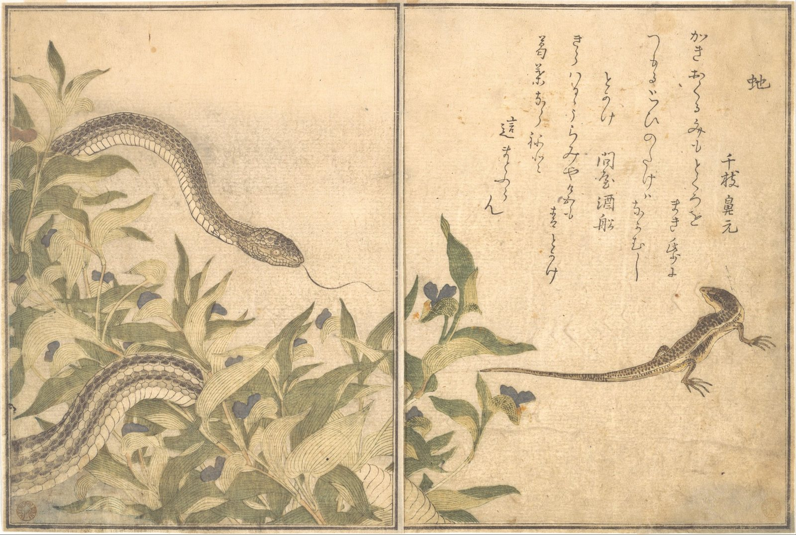

e_tehon e_手本
A digital practice book for Japanese art history: six modules on working digitally with Japanese visual materials. Each module explains what a method does, when to use it, and where its limits lie.
The modules build on each other, from foundational to advanced. To start from a specific question instead, use Start where your question is: it sorts the modules by task and lists what is still in preparation.

Early modern tehon taught learners to make things: how to hold the brush, how to build up a form, what to try next. Learners worked through them with their materials in front of them. e_tehon is a practice book in that sense, for people who work with Japanese visual sources on a computer.
The name plays on etehon 絵手本, the painting manuals of the Edo period, Hokusai's among them. Here the e of the picture (絵) is also the e of the electronic, and the underscore is borrowed from code, where it joins two words into one name: e_手本.
Japanese art history teaches close looking at objects. Digital research also needs the skill to build and adapt the environments through which we now see those objects. e_tehon teaches both together, so that digital projects treat the Japanese material accurately and art-historical arguments account for the tools they use.
Each module starts from a research question and works one method through from start to finish, using open data. It marks the decisions you need to make and states where the method ends. At any step, you can replace the example data with your own.
The modules
The modules build from foundational to advanced. Each covers one stage of a project: observe the material, define the problem, work out an approach, build and test it, connect it to existing work, and publish it.
-
Module 01, foundational
Data literacy for Japanese datasets
Names and lists: how to make a computer recognise a Japanese place or artist name when it is written in three different ways.
Empathise with the data. What does it contain, and which decisions were made before you received it? Open the module (about 60 minutes) -
Module 02, intermediate
Japanese images and metadata in art-historical research
Museum and library records: how Japanese institutions describe their images, where to find that information, and how to work with it when institutions disagree.
Define the problem. What are you trying to find, and which database can answer it? Open the module (about 75 minutes) -
Module 03, intermediate
Spatial research design
Maps and patterns: how placing Japanese works of art on a map reveals patterns, and what you can do with them. The module ends with the question of where a print was seen from, using the participatory georeferencing built for Drawing from the Crowd.
Ideate. From research question to pipeline, with each decision marked. Open the module (about 75 minutes) -
Module 04, advanced
Critical computer vision
Distant viewing: how to teach a computer to look at images of Japanese artworks, which patterns it finds, and how to use the model's errors as evidence. Draws on computer vision work in Drawing from the Crowd.
Prototype and test. Try the method on your own images and read the results as evidence, knowing what they are evidence of. Open the module (draft, about 90 minutes) -
Module 05, advanced
Linked data
How to connect your research to other people's, so that both can be reused. Works with the RDF that Japanese institutions publish (Japan Search and Web NDL Authorities), with Wikidata and its rules for adding data, and with vocabularies that can record disputed attributions.
Integrate and iterate. Connect what you have built to what already exists, and refine. Open the module (draft, about 110 minutes) -
Module 06, intermediate
Display and the book
What a book requires of a display tool, which features viewers support, and how to publish a small exhibition from a spreadsheet with open-source templates.
Communicate. Publish what you built, and state the decisions behind its arrangement. Open the module (draft, about 90 minutes; taught in October 2026)
Guides
Shorter pieces on specific problems, to use at any point.
-
Models, maps and counting
What a model is, what a map is, and how quantitative and qualitative research depend on each other. A good first page before the modules.
About 20 minutes, no prerequisite
-
Identifying a book you cannot read
Four ways to identify a book without reading its text (looking closely, image matching, union catalogues, machine transcription), and what each one allows you to claim.
About 30 minutes, no prerequisite
Who it is for
The modules are written for three groups:
- Students of Japanese art history who want practical training in working with their sources digitally.
- Early-career researchers and curators working with Japanese visual materials, in Japan and elsewhere.
- Digital humanities instructors outside Japan who teach these methods and want to apply them to Japanese materials.
Every module has two tabs in the margin. Open one when you need it.
The Japanese material explains what the sources require: a designer may sign with several names over a career; Hokusai appears as 北斎, ホクサイ or Hokousaï depending on who entered the record; a print has four makers, and catalogues usually name one.
The computational operation explains what each step decides. A machine analysis makes choices that an art historian would make explicitly (what counts as the same thing, which differences matter, what enters the corpus), and it makes them inside the code, where they are easy to miss.
The main text is complete without them.
Reading this site
Three colours, each with one meaning.
- The Japanese material. Margin tabs and glossary entries covering what the sources require: names, formats, the conventions that govern how this material was made and described.
- The computational operation. Margin tabs, glossary entries, and the links that run a step. What each operation commits you to.
- A decision you make. Each choice point names the options and what each one costs.
About
e_tehon is written by Dr. Stephanie Santschi, Chair of East Asian Art History, University of Zurich. It is being developed openly alongside the Ishibashi Foundation Graduate Programme at UZH, whose inaugural cohort works with early versions of modules 1–3 in autumn 2026. Module 6 was taught in October 2026 as the block seminar Displaying the Illustrated Book, by Stephanie Santschi as Ishibashi Foundation Lecturer for Digital Curation.
Elsewhere
santschi.theprintlab.org is Stephanie Santschi’s own page. Drawing from the Crowd is the sibling project, a participatory georeferencing platform for ukiyo-e research. Corrections are welcome through the repository issues.